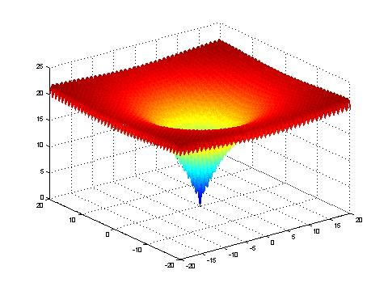
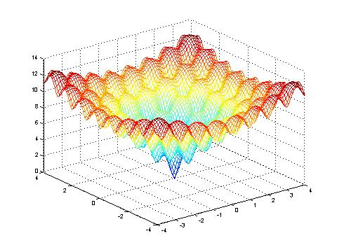

Ackley's function is multimodal and symmetrical. It is based on an exponential function and modulated by a cosine function.
The outside region is almost planar as to the growing influence of the exponential function.
In the center there is a steep hole as to the influence of the cosine function.
Its minimum is at: f(x)=f([0, 0, ... , 0])=0.
The difficulty for an optimization algorithm is mid-graded because a simple optimization-algorithm like hill-climbing would get stuck in a local minimum. The optimization algorithm has to search a broader environ to overcome the local minimum and get closer to the global optima.

Ackley's function within the co-domain -20 >= x >= 20, a=20, b=0.2, c=2*π, n=2.

Ackley's function close to the optimum.
David. H. Ackley. A connection machine for genetic hillclimbing. Kluwer Academic Publishers, Boston, 1987.
Thomas Baeck. Evolutionary Algorithms in Theory and Practice. Oxford University Press, 1996.